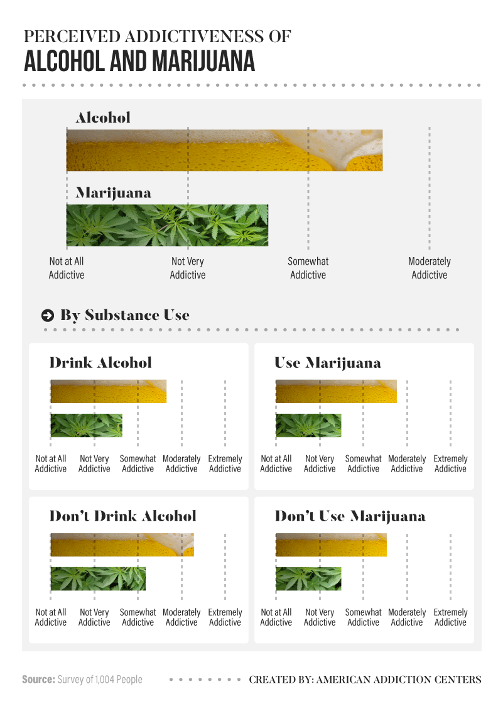
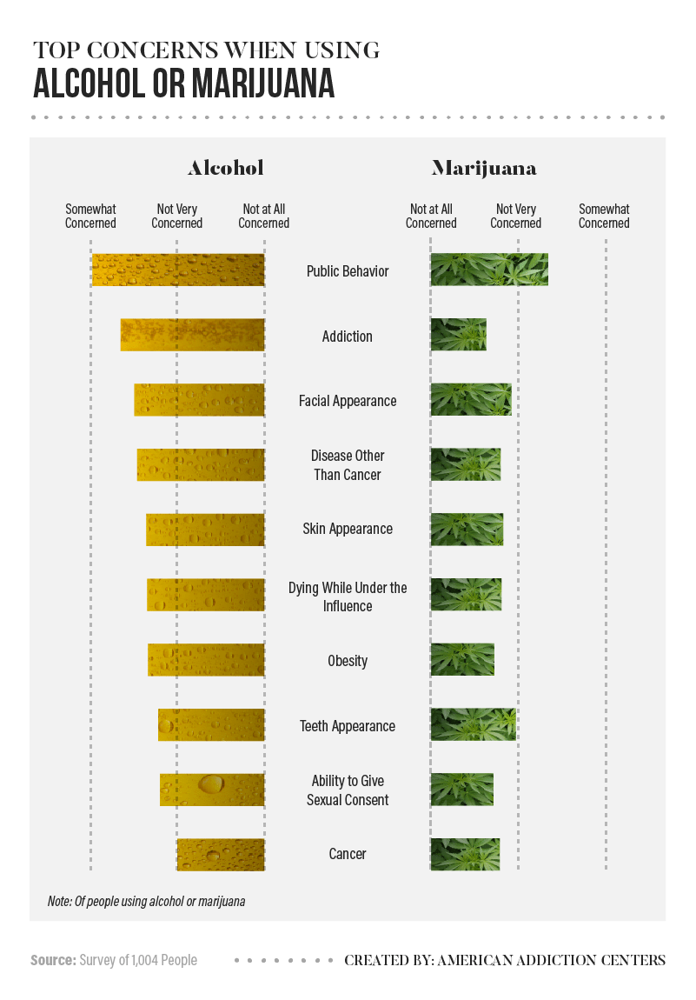
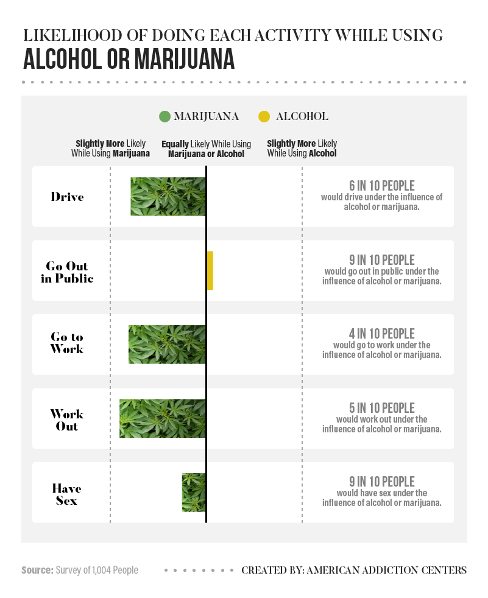
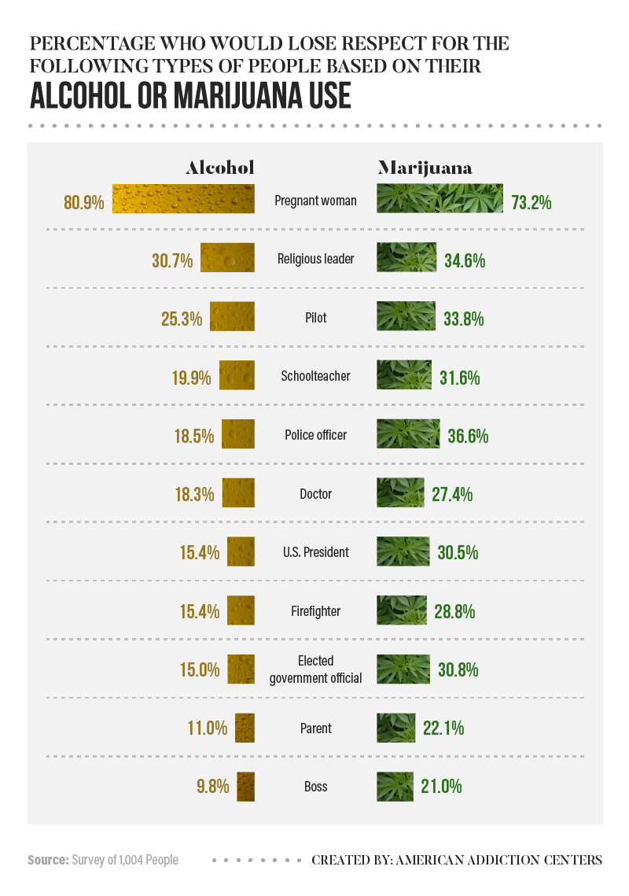

Legalize Don't Criticize is an organization started by high school seniors in Santa Monica, CA. Being in high school, we often attend parties where marijuana and alcohol are present. Over time, we've noticed the ways our peers consume and abuse these substances and how it affects their actions and judgement. Our purpose is to not condone the use of either of these substances simply because it would be illegal for us to do so, but more so educate our peers on the dangers, harms, and benefits of both. We want you to know what you're putting in your body so you can make the right decision when the tricky situation comes your way.
"WEEDuce Stigma. Educate BUDdies. HASHvocate for more research. Briefing on KEEFing. Scream for GREEN. Exempt the HEMP."
Our mission is to reduce the stigma among marijuana use as a whole and its classification as a “drug” among older generations who lack credible information and research. Our goal is to not work towards legislation but more so to educate people on the dangers and more harmful nature of alcohol, a widely enjoyed drug, as they compare to those of marijuana.
The surveys as a whole contribute to show that more people feel able to function for everyday tasks while intoxicated by marijuana versus alcohol.
The statistics in the image above show that more people find alcohol addictive than marijuana.
This image above shows how the majority of people are considerably more concerned about alcohol versus marijunana under all aspects.
When comparing the two, those who would use the substances find themselves significantly more functioning while intoxicated by marijuana than alcohol.
Yet when asked about the respect they have for others, all but pregnancy would result in them more often losing respect for those who smoke weed. This conclusion seems not to be coherent with the data the respondents gave prior.
Follow us on Instagram, Twitter, and Facebook to keep up with all things Destigmatize Don't Criticize. Our posts should inform you daily on new research developments, facts, and other information to equip you with the knowledge to confidently make decisions for yourself as to whether or not you want to be consuming that substance.
If you want to help, reach out to us! DM us on Instagram, Twitter, Facebook or email us at legalizedontcriticize@gmail.com. We are always looking for helping hands and we need you to help our initiative grow and reach wider audiences. Shout us out on your social media page, tell your friends to follow us, tell your parents to follow us, tell your grandparents to follow us, tell your friend's friends to follow us, tell your friend's parents to follow us, and tell your friend's grandparents to follow us.